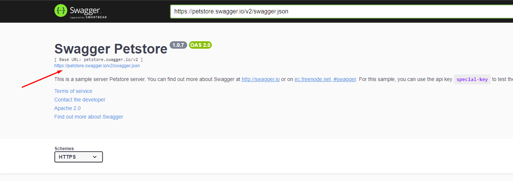
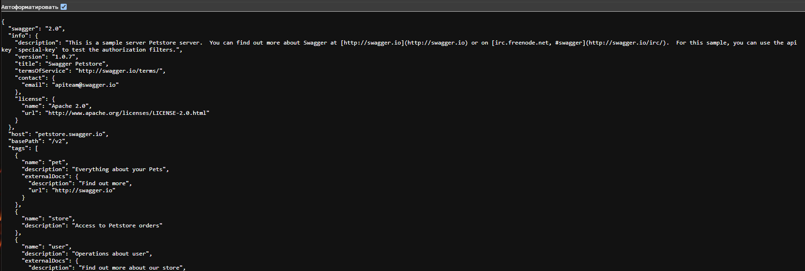

К этому моменту ты познакомился с архитектурными технологиями, составляющие основу процессов взаимодействия компонентов (клиент, сервер, БД). Теперь перейдем к изучению практических инструментов, изучим раздел анализа трафика и поработаем с API.
Вспомни уроки 0-6 и 2-2. Там мы касались того, что собой представляет сваггер.
По сути это спека (документация) к API, описание как и какие ручки можно дергать. Сваггер — это GUI, построенный на основе обычного JSON или YAML документа с перечислением тех самых ручек, методов, схем, допустимых значений и т.д. Этот документ называется OpenAPI.
В тестировании долго копаться в сваггере не нужно, обычно посмотреть типы поддерживаемых данных и перечисляемые параметры, JSON схему, возможные коды ответов и так далее. И закинуть пару простеньких запросов на бэк (что ты уже делал в вводном модуле).
Перейди в уже знакомый тебе swagger petstore. Нажми на эту ссылочку:

И нажми галочку «Автоформатировать». Ты увидишь большой JSON файл со всеми ручками из сваггера и их документацией.

В теории на твоем будущем проекте можно откиснуть сваггер, и тебе придется вручную искать нужную ручку и просматривать требования к ней, чтобы корректно потестить бэк. Это скорее исключение, но знать важно. И в целом очень важно понимать, что ядро сваггера — это OpenAPI.
Также немаловажно уметь импортировать OpenAPI в Postman, чтобы быстро формировать коллекции из ручек. Вместо того, чтобы вносить каждую ручку по отдельности. Об этом в уроках с Postman.
И позже внедрить это в свою легенду :)
Изучи из чего состоит спецификация и где искать её параметры в сваггере:
Читай, если подзабыл какие типы данных поддерживаются JSON и могут указываться в JSON схеме.
Порядок действий:
"test_name")БД может также криво отрабатывать, если после PUT отправляешь GET и не видишь изменений в приходящем JSON, попробуй отправить GET еще раз.